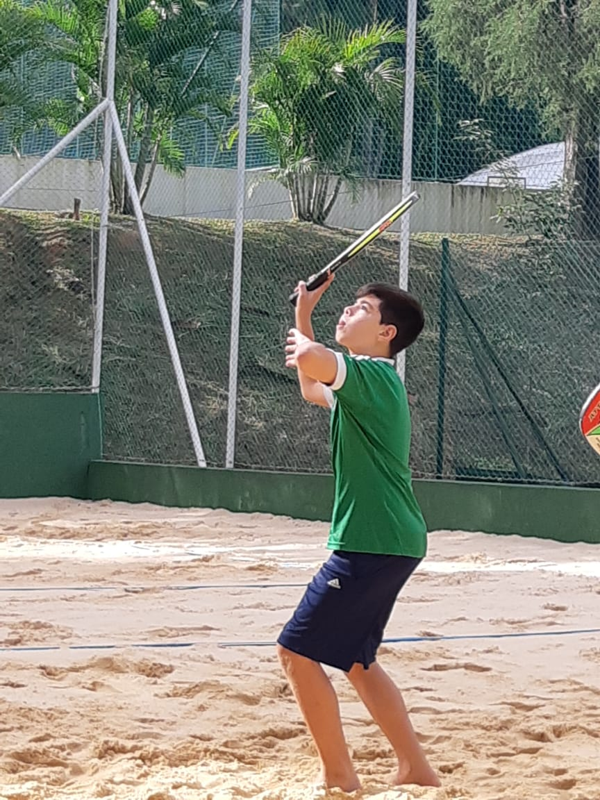
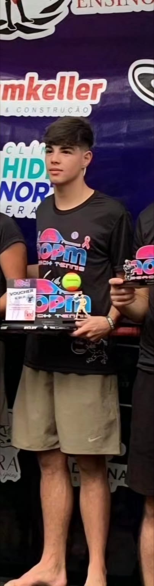

Inicio
Comecei a jogar Beach tennis por volta do começo de 2019 onde tinha acabado de virar socio em um clube,
nele tinham acabado de criar novas quadras de beach tennis, mesmo sendo um esporte novo me gerou curiosidade
e me fez começar, desde o comeco me falavam que eu talvez tinha um futuro no esporte por conta da pouca idade e
já estar jogando bem na época.

Volta
Voltei a jogar no inicio de 2021 por conta da pandemia, e percebi que o esporte ja tinha evoluido muito,
as pessoas acabaram treinando e evoluindo com o passar da pandemia, mas isso foi bom por conta que me
incentivou
a jogar mais e melhorar a cada dia e me tornar cada dia um pouco melhor.

Podiums
Durante meu pouco tempo no competitivo de beach tennis tive algumas conquistas e algumas derrotas
bem marcantes onde ja tive muita vontade de desistir e acabei me tronando cada vez mais forte e melhor,
minhas maiores conquistas foram em campeonatos internos e nunca tive Tanta expressão jogando campeonatos
externos mas acabei ganhando alguns deles.
Inicio
Comecei a jogar Beach tennis por volta do começo de 2019 onde tinha acabado de virar socio em um clube, nele tinham acabado de criar novas quadras de beach tennis, mesmo sendo um esporte novo me gerou curiosidade e me fez começar, desde o comeco me falavam que eu talvez tinha um futuro no esporte por conta da pouca idade e já estar jogando bem na época.
Volta
Voltei a jogar no inicio de 2021 por conta da pandemia, e percebi que o esporte ja tinha evoluido muito, as pessoas acabaram treinando e evoluindo com o passar da pandemia, mas isso foi bom por conta que me incentivou a jogar mais e melhorar a cada dia e me tornar cada dia um pouco melhor.
Podiums
Durante meu pouco tempo no competitivo de beach tennis tive algumas conquistas e algumas derrotas bem marcantes onde ja tive muita vontade de desistir e acabei me tronando cada vez mais forte e melhor, minhas maiores conquistas foram em campeonatos internos e nunca tive Tanta expressão jogando campeonatos externos mas acabei ganhando alguns deles.